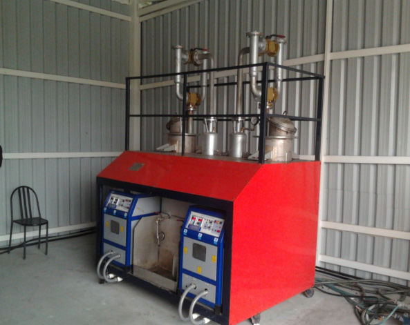

Features
FEATURES OF POLYCRACK
Low Operating Temperature < 350
o
C
High Moisture Tolerant upto 50%
Atmospheric Pressure Reactor
Unique Multifunctional Catalytic Process
Multiple Heterogeneous Mingled Feed Stock Capability
Consistent Fuel Quality
No pre-segregation of material since segregation completed during processing
Entire unit is enclosed, no dust or smoke pollution
Modular system that can be upgraded based on garbage generation
Creates a safe reactor environment
No volatile vapour build-up inside reactor
No pressure build-up inside reactor
No clogging or solid build-up inside reactor
Two way discharge of Products

Polycrack is Environment Friendly
Non-Polluting
No Dioxins and Furans
Low PM count
Low SOx and NOx emissions
Low Toxic metals
All readings are much below permissible limits
Polycrack can be fed with the following
All types of Plastic
Petroleum sludge
Un segregated MSW with moisture up to 50%
E – Waste
Automobile fluff
Organic waste including bamboo’s, garden waste etc
Jathropa fruit and palm bunch
FUNCTION OF MFC
De-polymerization
Cracking
Reforming
Scrubbing
Particle Filtration
Rapid Quenching
TECHNOLOGY ASSESSED BY
University of Texas, Austin
Dept of Science and Technology - Govt. of India
Indian Institute of Technology, Mumbai
Technical University, Brunsweig, Germany
COMMERCIALIZATION SUPPORT BY
IC2 Institute, USA
FICCI, India